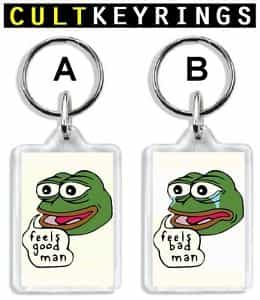
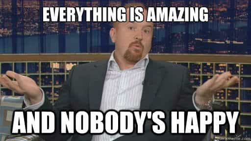

is an aspiring philosopher king, living the dream, travelling the world, hoarding FRNs and ignoring Americunts. He is a European at heart, lover of Latinas, and currently residing in the USA.


Most of you know men and women are fundamentally different. Despite the feminist narrative trying to push equality, neutering our language, and encouraging men like Bruce Jenner to neuter himself, there are fundamental differences between men and women that can never be overcome.
A girl in my current rotation recently became a Yelp Eliter! If you haven’t come across this species in the wild yet, it’s a basic bitch who has her opinion artificially elevated and amplified because she goes out often and uses her smart phone even more frequently than your typical millennial, constantly “checking in” to places and writing reviews about how that froth on her pumpkin double sugar latte lite wasn’t quite as beautiful as the last time she ordered it, and maybe if the staff wasn’t so rushed and asked her if she was having a nice day, she would return there more often.
This girl is excited because now she can be invited to new restaurant openings where they give free dinners in exchange for reviews (when I heard that I immediately discounted yelp as an unbiased source — Tripadvisor, Urbanspoon or other options are better). I’m invited to tag along, but I won’t be participating in this unethical pay for play review system.

I investigated some of her recent reviews on the site, and noticed they were almost all either 1 star or 5 star reviews. This explains the female mind perfectly to me. The experience to women is completely about feelings, and not about any objective standards of measurement. Mediocre restaurants or bars I’ve visited were given the perfect 5 star award because they created sufficient tingles and triggered her emotionally, while nice places that didn’t greet her sufficiently when she met the hostess were given 1 star “avoid at all costs” labels.
1 Star Review in the Making
I’ve noticed this in the past when looking for a restaurant or hotel when travelling. I’d often pull up yelp, and if a place had mixed reviews, many times I could wade through and ignore the female reviews and get a much clearer picture of whether the place was good or bad (they love to surrender their privacy for the faux social status being a frequent reviewer gives them, so you can usually spot them by their female profile pictures).

Indeed, I noticed the last review she made was a luxurious boutique hotel with large glass chandeliers in the lobby, a rooftop swimming pool, sharp, uniformed staff, and a room far nicer than the one she typically sleeps in. This place was given a 1 star review, because someone either failed to make her feel like a special snowflake, or said something that caused her to have bad feelings.
In that moment I realized that women experience life almost completely on their feelings. There is nothing that someone could have said to me to lower such a luxurious place below 3 stars, and yet, here it was, ranked down there with the local No Tell Motel because of feels.
Indeed, the review bore this out, as there were no complaints about the quality of any of the amenities the business owner had provided to his customers–the pool, the beautiful views, the comfortable beds, the cable tv with endless entertainment options, and the fitness facility were all functioning properly, and yet, to a female mind, this was a poor experience because of her feelings.
Feminism wants to do this everywhere.
Of course much could be said about this elevation of women’s voices into elite decisionmakers, which will negatively shape the products and services you and I are interested in. A place with great food but lacking in décor will fail (unless said décor is pulled off in such a way as to come off as “retro”) because women will not feel good there.
Likewise, a place with mediocre or overpriced services but that caters to women’s narcissism correctly, by, say, calling the girl by name when she shows up, or asking her how her experience was, or hashtagging the latest SJW crusade, will be given unwarranted praise and success. This is the effect of a feminized economy where women control up to 85% of spending.
But it also answers so many questions men struggle with in frustration. Why isn’t she behaving logically? Why did she say one thing but do another? Why is it easier to bed women after taking them on exciting dates? Why do white women pursue foreign men when on vacation, when they will return home to all white gated communities and ignore the same men at home? Why did a 24 year old virgin have a one night stand?
Kind of true.
Why do men leave their husbands suddenly because “he doesn’t make me feel the way I used to?” Why will women go back to men who abuse or rape them? Why do methods like venue changing multiple times in a date increase the likelihood for sex? Why do women pursue DJs, bartenders, rappers, or alpha men they have no chance at a relationship with? It’s all because of their emotional state.
Indeed it is not even fair to judge them by our standards, because they are ruled by emotion, not logic. Which is why giving them unfettered freedom in the hopes they are happy with the outcome, or will learn from mistakes and become better people, is fundamentally misguided and wrong.
First, do not get frustrated at anything women say or do. Realize that whether intentional or not, they are motivated by emotions and it’s futile to try to understand emotions. Second, use this knowledge to create positive emotional experiences for women, and you will greatly increase your success rate.
I have no clue why women give shit tests, but I do know that the beta reaction of getting upset or defensive or argumentative creates a negative vibe, while being playful and dismissive and confident, even while logically ignoring her question, creates a happy, good vibe.
If I could sum up game into one sentence, whether concerning wives, girlfriends, or one night stands, it would be Control Her Emotions. How did Kobe Bryant keep his wife after getting caught banging teenage girls? He said the right things to make her feel good, and gave her a big nice shiny rock that makes her feel special. Women are simple. Instead of fretting that they’re illogical, we should enjoy the bounty that comes when we manipulate their emotions in the right way.
Read more: Women Must Have Their Behavior And Decisions Controlled By Men